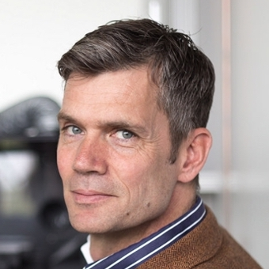
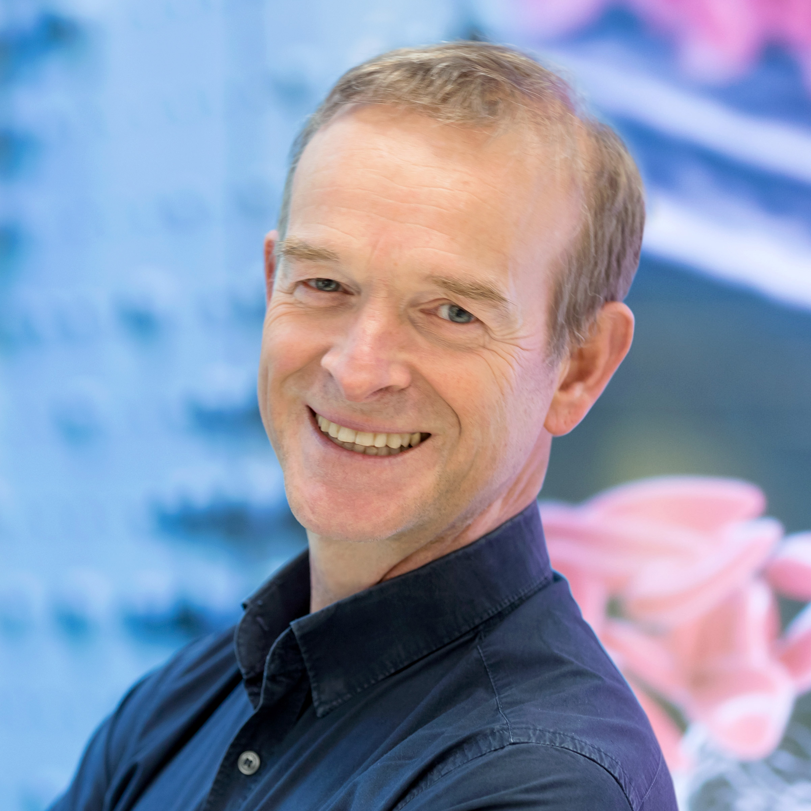
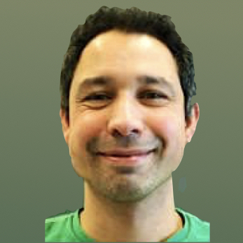
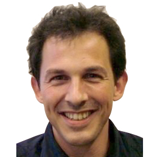
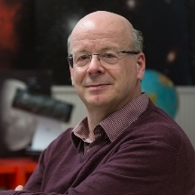
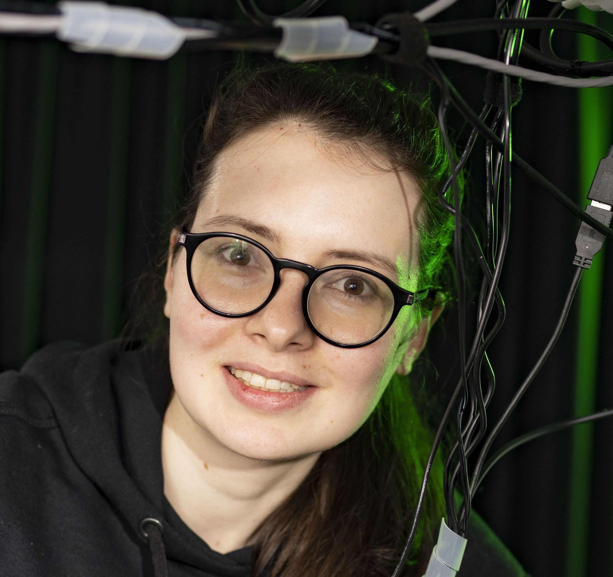
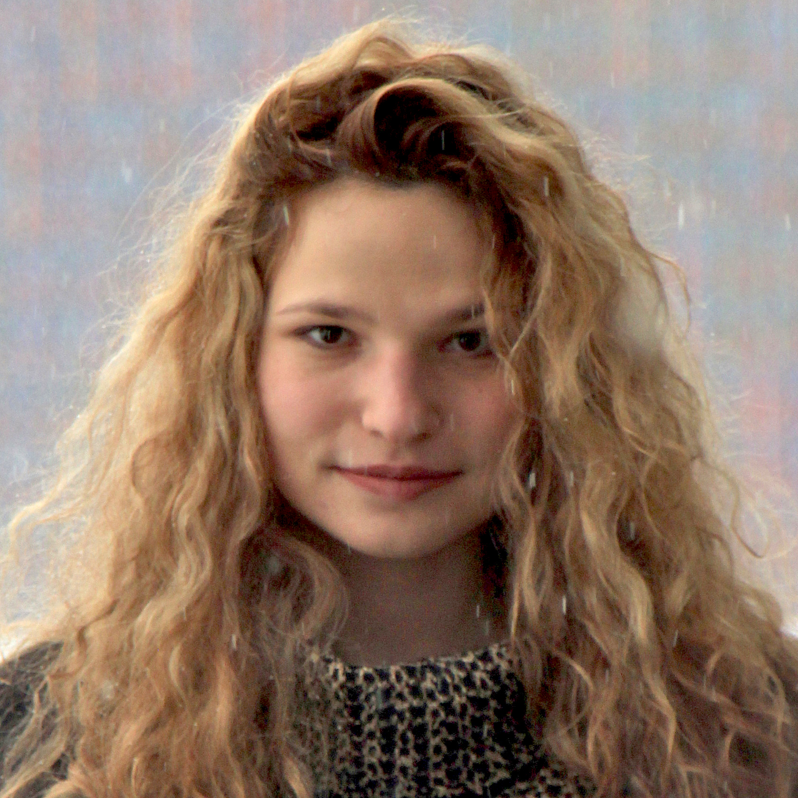

Management Bernd Ensing Director Patrick Forré Lab Manager Group leaders and consultants Willem Bouten Prof. Comput. Geo-Ecology  Leendert Hamoen Prof. Life Sciences  Alfons Hoekstra Prof. Computational Science  Martijs Jonker Assoc. Prof. Life Sciences  Emiel van Loon Assoc. Prof. Statistical Ecology Joris Mooij Prof. Mathematical Statistics Samaya Nissanke Assoc. Prof. Physics Bob Pirok Asst. Prof. Analytical Chemistry Antonia Rowlinson Asst. Prof. Astrophysics Max Welling Prof. Machine Learning Christoph Weniger Assoc. Prof. Theor. Physics  Ralph Wijers Prof. Astrophysics  Lyuba Amitonova Asst. Prof. Nanoscale Imaging and Metrology PhD students Jim Boelrijk PhD student Fiona Lippert PhD student Benjamin Miller PhD student  Teodora Pandeva PhD student David Ruhe PhD student Cong Liu PhD student Jacobus Dijkman PhD student Ferry Hooft PhD student Maximilian Lipp PhD student Youri Ran PhD student Rik Breebaart PhD student